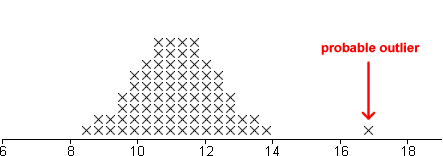
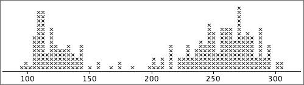
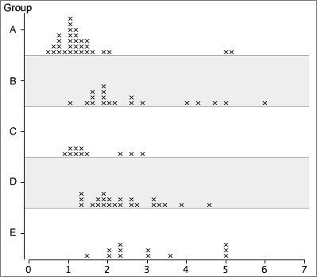
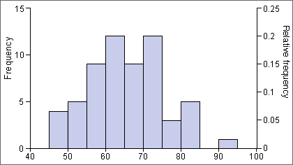
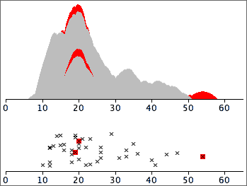
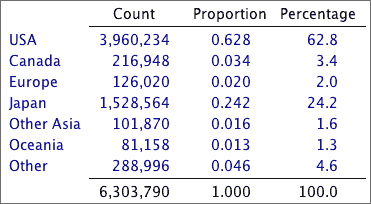
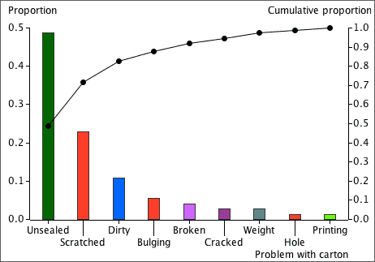
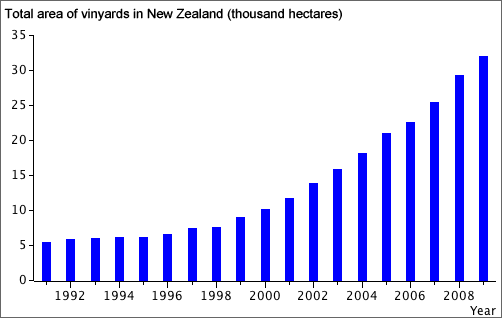

If you don't want to print now,
Information from the variation in data
Variation in data is not simply an annoyance — the variation itself can hold important information.
Simply sorting a data set into order can highlight features that are not obvious in the raw data, such as the lack of values between 3.4 and 4.9 in the data below.
| 6.1 | 5.2 | 7.9 | 2.3 | 3.4 |
| 1.4 | 5.3 | 7.1 | 3.2 | 2.8 |
| 5.1 | 6.9 | 6.1 | 3.4 | 5.2 |
| 5.5 | 2.0 | 1.3 | 4.9 | 6.4 |

Dot plots
Some ranges of values are more common than others — they have higher density.
The simplest graphical display of data that shows where there is high and low density is a dot plot. This shows each value as a cross (or dot) against a numerical axis.
The gap between 3.4 and 4.9 is more obvious on the right than in a textual list of values, whether ordered or not.
Jittering the crosses
In all but the smallest data sets, the crosses on a basic dot plot overlap, making it difficult to identify regions of high density.
Randomly moving crosses away from the axis reduces this problem by separating the crosses:
Note that the vertical jittering is random and therefore tells you nothing about the data.
Stacked dot plots
Stacking the crosses into columns is usually better than jittering them.

Stacking highlights regions of high density well (tall stacks).
Digits instead of crosses
Stem and leaf plots are closely related to stacked dot plots. The crosses are replaced by digits that provide a little more detail about the values that they represent.
Stems and leaves
In a stem and leaf plot, the axis is replaced by a column of 'stems' — the most significant digits of the values in the data. The digits that replace the crosses are called 'leaves' and give a further significant digit of each value on a stem.

A final refinement is to sort the leaves into increasing order on each stem.
Need for more flexibility
Sometimes basic stem and leaf plots are not flexible enough — there would be either too many or too few rows of leaves to show the varying density well.
Repeating each stem 2 times (with leaves 0-4 on the lower copy and leaves 5-9 on the upper one) or 5 times (with leaves 0-1, 2-3, 4-5, 6-7 and 8-9 on the different copies) gives intermediate numbers of stems.

Smoothness
When drawing a stem and leaf plot, the aim is for a smooth shape to the stem and leaf plot, and this is usually achieved by between 10 and 20 rows of leaves.
Drawing by hand
When data are analysed on a computer, a stacked dot plot usually describes a distribution of values more clearly than a stem and leaf plot.
However stem and leaf plots are easy to draw by hand:
To simplify drawing, values are truncated to give their stems and leaf digits, not rounded. For example, 7.98 and 7.90 would both be displayed as leaf '9' on the stem '7'.
Outliers
Values that are considerably larger or smaller than the bulk of the data are called outliers.
An outlier may have been incorrectly recorded, or there may have been other anomalous circumstances associated with it. Outliers must be carefully checked if possible. If anything atypical can be found, outliers should be deleted from the data set and their deletion noted in any reports about the data.
Outliers and skew distributions
Deciding whether a value is an outlier or not is affected by the shape of the distribution of values for the rest of the data.


Clusters
If a dot plot, stem and leaf plot or histogram separates into two or more groups of values (clusters), this suggests that there may be more fundamental differences between the 'individuals' in the groups.

Further investigation should be made of the individuals in the clusters to find whether they also differ in other ways.
If the clusters were less distinct, especially in small data sets, you would need external supporting evidence before concluding that the individuals separated into meaningful groups.
Distribution of values
Even when a data set has no outliers or clusters, the distribution of values also contains useful information. Important features are:
The concepts of centre and spread are particularly important.
Extra information
When only a single value is known from each individual (or plant, item, etc), all that can be discovered is the shape of the distribution of these values.
Additional information about each individuals may give insight into why some values are bigger or smaller than others. Different types of information may be available. The simplest is a unique name for the individuals — a textual label. These names may help us to understand why values are outliers or group into clusters in a dot plot or stem and leaf plot.
Multiple groups of individuals
Sometimes we know that the individuals belong to two or more groups before the data are collected or, equivalently, that they have different values of an extra categorical variable.
Information about groups is best displayed by plotting the separate groups against a common axis.

Back-to-back stem and leaf plots
Stem and leaf plots can be used to compare two groups of individuals, if drawn on different sides of a common column of stems. (They are less useful if there are three or more groups.)

Dangers of overinterpretation
Features in the distribution of a small data set may not be meaningful.
Be careful not to overinterpret patterns in small data sets. Clusters, outliers or skewness may appear by chance even if there is no meaningful basis to these features.
Pronounced outliers or clusters may be taken as indicative of something meaningful in the underlying process. However less pronounced outliers or clusters must be supported by outside evidence before these features can be interpreted as meaningful.
Density
In a stacked dot plot (or stem and leaf plot), the highest stacks contain the most values. These stacks have the highest density of values.

Histograms more directly show how density varies along the axis.
Histograms
In a simple histogram, the axis is split into sub-intervals of equal width called classes. A rectangle is drawn above each class with height equal to the number of values in the class — the frequency of the class.

Aim of a 'smooth' histogram
There is considerable freedom in the choice of histogram classes. The exact shape depends on:
We usually choose classes with the aim of smoothness in the outline of the histogram rectangles.

The choice of 'best' classes is subjective, but...
If your conclusions about what a histogram tells you about the data depend on the choice of histogram classes, you are over-interpreting its shape.
Warning for small data sets
For small data sets, changing the class width and the starting position for the first class can give a surprising amount of variability in histogram shape, so be extremely wary of over-interpreting features such as clusters or skewness.
Indeed, it is probably better to avoid using histograms unless there is a reasonable number of values — stacked dot plots are far less likely to mislead you over minor features.
Relative frequency
When all histogram classes are of equal width, histograms are often drawn with a vertical axis giving the frequencies (counts) for each class. The vertical axis can alternatively be labelled with the relative frequencies (proportions) for the classes.
(There is no harm in including both axes.)

Area equals relative frequency
An important property of histograms is that the proportion of values in one or more classes equals the proportion of the histogram area above these classes.

Therefore,
Relative frequency = proportion of the total area
Relative frequencies to compare two groups
Histograms may be superimposed to compare two groups. However if the groups differ in size, it is usually more meaningful to compare relative frequencies (proportions) than the counts in the classes.
Use relative frequency histograms to compare groups.
For example,

Population pyramids
Relative frequency histograms are also used to describe the distribution of ages in populations. Males and females are separately displayed to the left and right of a central axis, and different sub-populations may be shown in separate 'pyramids'.

Mixed class widths
For some data sets, wider classes give a smoother histogram in some ranges of values (e.g. in the tail of a distribution) and narrower classes are better in other parts of the distribution (usually where there is greater density of values).
In a correctly drawn histogram, each value contributes the same area.
Histograms can be drawn with mixed class widths, but it would be badly misleading to make the rectangle heights equal to either the class frequency or relative frequency.

Area and proportion of values
The details of drawing histograms by hand with varying class widths are unimportant — a computer should be used. To interpret their shape remember that
The proportion of the total area above any classes equals the proportion of values in them.
For example,

Frequency polygons
A frequency polygon is closely related to a histogram with equal class widths. It joins the midpoints of the tops of the class rectangles and tends to give a smoother outline than the corresponding histogram.

It is easier to distinguish and compare superimposed frequency polygons for two groups than the corresponding histograms.

Kernel density estimates
A kernel density estimate is an alternative to a histogram that often results in a smoother display of the density of values. Each data value on the axis is replaced by a 'blob' of ink (kernel) and these kernels are stacked.

The widths of the kernels can be adjusted — if they are too narrow, the display becomes jagged, but if they are too wide, the display becomes too spread out and detail is lost.
It is important to distinguish two types of numerical data.
Dot plots for counts
Dot plots can be used to display count data. However since discrete values are often repeated several times in a data set, the crosses need to be jittered or, preferably, stacked.

If there is a stack for each integer value, the stacked dot plot is a complete representation of the data.
Displaying moderate or large counts
For discrete data sets whose values are large counts, a histogram can be used to give a 'smooth' summary of the shape of the distribution of values.
If the counts are a bit smaller, the exact definition of the histogram classes becomes important. The class boundaries should end in '.5' to ensure that data values do not occur on the boundary of two classes.

Displaying small counts
When the range of values in a discrete data set is small, a histogram can be drawn with class width 1 (and with class boundaries ending in '.5'). These classes are centred on 1, 2, 3, etc.
This can be improved by narrowing the histogram rectangles into bars to emphasise the discrete nature of the data. This is called a bar chart.

Numerical and categorical data
In a data set, a numerical variable contains a number from each individual. A categorical variable classifies each individual into one of several groups.
Frequency tables
For a categorical variable, the frequencies for the distinct categories are the number of times each category occurs in the data set. The frequencies fully capture all information about the distribution of values and are usually presented in a frequency table.

Proportions
The proportions of values in the categories (their relative frequencies) are the frequencies divided by the total number of values.
Percentages
Percentages are simply proportions multiplied by 100. It is usually easier to quickly compare a column of percentages than the corresponding column of proportions.

Necessary property of a frequency table
A frequency table distributes each of a collection of 'individuals' into one of several categories. Each individual must therefore contribute 1 to exactly one of the counts in the table.
Make sure that you can recognise whether a table of counts or percentages is a frequency table.
Modifying a frequency table
Sometimes a frequency table can be modified to make the information clearer or to highlight particular aspects.
Alphabetic ordering of the categories is rarely best.
Bar charts
The main graphical display of categorical data is a bar chart. In a bar chart, the height of each bar is equal to the frequency (or equivalently relative frequency) of that category.

Ordering categories
If the categories have a natural ordering (an ordinal categorical variable), this ordering should be used in a bar chart.
For nominal categorical variables (no natural ordering), alphabetic ordering of the categories should be avoided. It is better to sort them in order of decreasing frequencies, giving a Pareto diagram.
Detecting 'important' categories
Pareto diagrams are particularly useful in industrial quality control and quality improvement where information is collected about the causes of problems in manufacturing processes. The Pareto principle states that:
A large percentage of instances of any problem result from a small percentage of the possible causes.
The leftmost categories in a Pareto diagram are most important. A line is usually added showing the cumulative proportions for the different causes. For the i'th category, the height of the line gives the proportion of problems from any of the i most common categories.

Chartjunk
 Bar charts can be very simple and need not take up much space in reports. Avoid the temptation to embellish them 'artistically' to make them more
visually appealing. These additions are collectively called chartjunk.
Bar charts can be very simple and need not take up much space in reports. Avoid the temptation to embellish them 'artistically' to make them more
visually appealing. These additions are collectively called chartjunk.
Chartjunk adds 'noise' to a bar chart and makes it harder to read the real information that is contains. Rather than adding chartjunk, draw it small or replace it with a frequency table.
A common form of chartjunk arises when each bar is drawn as a 3-dimensional object. When the resulting 3-dimensional picture is rotated, it often becomes harder to compare the heights of bars and to read off values from the axes. In particular, perspective views should be avoided.

Replacing bars with objects
A more serious problem arises when the rectangular bars in a barchart are replaced with pictures of objects. This often visually mis-represents the proportions in the different categories — the visual importance of a bar is determined by its area or volume, not its height.

Other displays of categorical data
A stacked bar chart is simply a bar chart whose bars are stacked on top of each other. Stacked bar charts are often used to compare two or more groups of individuals.
A pie chart, splits a circle into segments according to the proportions in the categories. The angle for a category is given by its proportion.

In all three displays, the area of ink for any category equals the proportion of values in that category.
Bar charts and pie charts highlight different aspects of the data
Although a bar chart and a pie chart are visual representations of the same values (the proportions in the categories), they highlight different features of these proportions.
Bar charts provide better comparisons of the individual proportions, whereas pie charts allow us to assess the proportions in two or more adjacent categories. The latter is particularly useful if the categories are ordered or split into meaningful groups.

Chartjunk
Resist the temptation to 'enhance' pie charts with chartjunk. In particular, 3-dimensional pie charts can over-emphasise the categories closest to the viewer.

In general, it is better to draw a standard pie chart smaller rather than embellishing it with chartjunk.

Bar charts for quantities
Bar charts are most often used to show frequencies for discrete or categorical data but they can be used to display any quantity data. (Quantity data are 'amounts' of something and are always positive. They are also called ratio variables.)

Pie charts for quantities
Pie charts can also be used to display quantity data, but there is an additional requirement that must be satisfied before a pie chart is used. The total of all the data that are displayed must itself be meaningful.
In the published pie chart below, the individual values are death rates per 100,000 live births, so their total is meaningless. A pie chart therefore should not have been used.